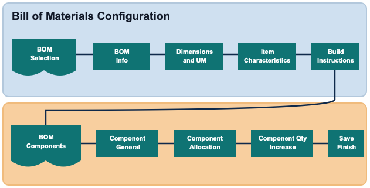

The Bill of Materials (BOM) configuration defines a finished item and its component items, including build sequence, required quantity, allocation behavior, and quantity increase rules. The flow supports both BOM header setup and BOM component setup in a guided sequence.

The selection screen lists existing BOM records with Item, Description, Company, Quantity UM, and Revision Number.
Select Add Bill of Materials to create a new BOM header.
Select Edit to update an existing BOM header.
Select Delete to remove an existing BOM header.
Define the finished item and primary BOM header values.
Finished Item, Description, Company, and Quantity UM.
Revision Number is display-only in change mode and defaults for new records.
Build Location supports location validation.
Planned Unit Build Time is managed as hours and minutes.
Define dimensional and weight values used for the BOM item.
Length, Width, Height, and Weight with corresponding UMs.
Volume is derived from length x width x height.
Define classification and business attributes for the BOM item.
Item Class, Size, Color, Style, Value, and Cost.
Inventory Tracked is displayed as a read-only status.
Define instructions for building the finished item.
Build Instructions supports free-form text entry for process guidance.
Manage detail lines for component items associated with the BOM header.
Review component list values such as Level, Sequence, Component Item, Quantity Per BOM Item, Quantity UM, and From Location.
Add, edit, or delete component detail records.
Define core component detail values.
Component Item, Description, Company, Build Level, Build Sequence, Quantity Needed Per Item, and Quantity UM.
Default values are applied for level, sequence, and quantity when blank or zero.
Define how the component is sourced during allocation.
Allocation Rule and From Location (with location validation).
Inventory Tracked is displayed as read-only.
Define quantity increase behavior for eligible component items.
Eligible enables quantity increase controls.
Compute Quantity As defines increase type.
Minimum Required Quantity and Increase Quantity define increase thresholds and increments.
Use Save on any section to persist changes. Use Finish on the components screen to return to the BOM selection list.